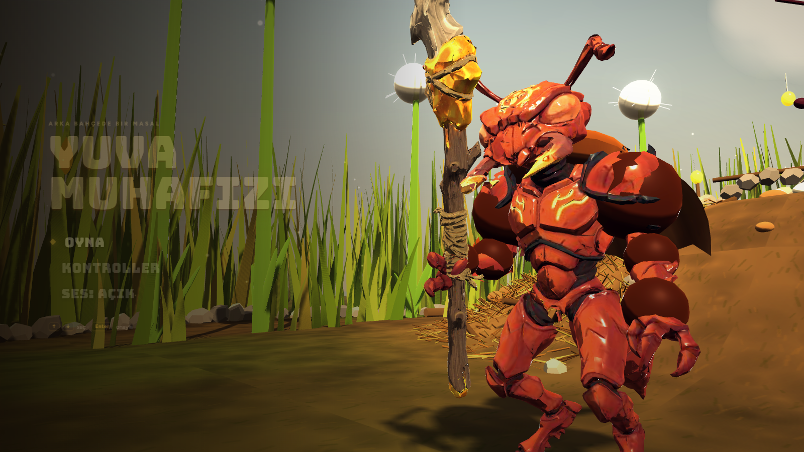

Yuva Muhafızı
A third-person 3D action game where you play the colony's soldier ant. By day you raid a procedurally rearranged backyard for food and resin with your worker ants; by night you defend the queen against insect waves using telegraphed-attack combat, traps and caste evolutions. The game loop, AI, combat and UI are written from scratch on top of Three.js.
Links: Play